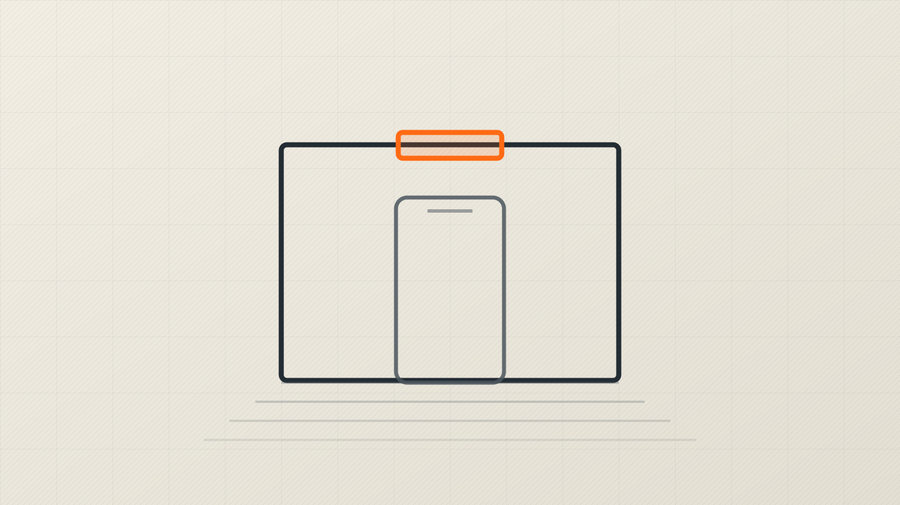
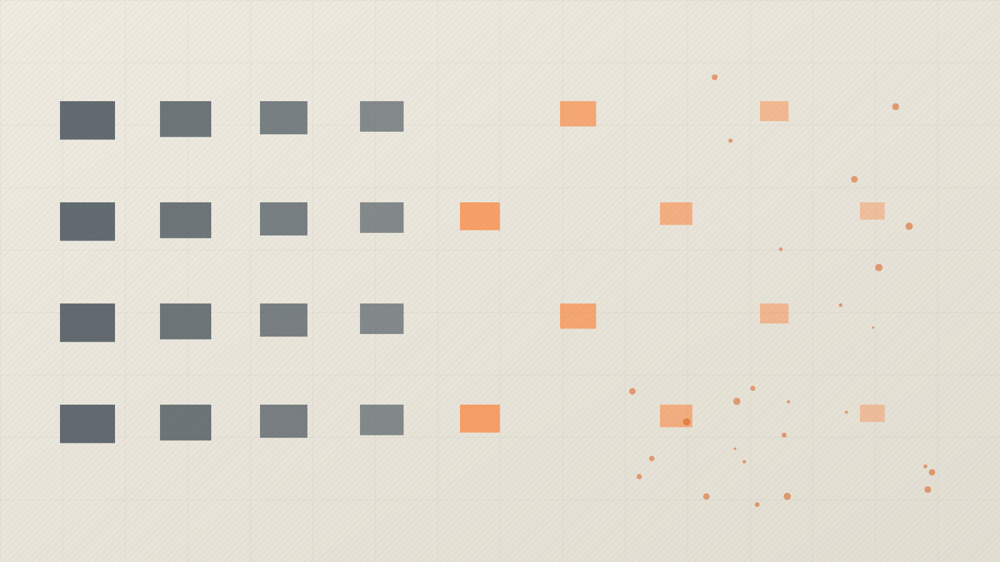
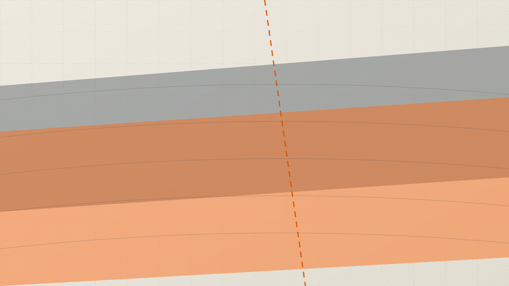
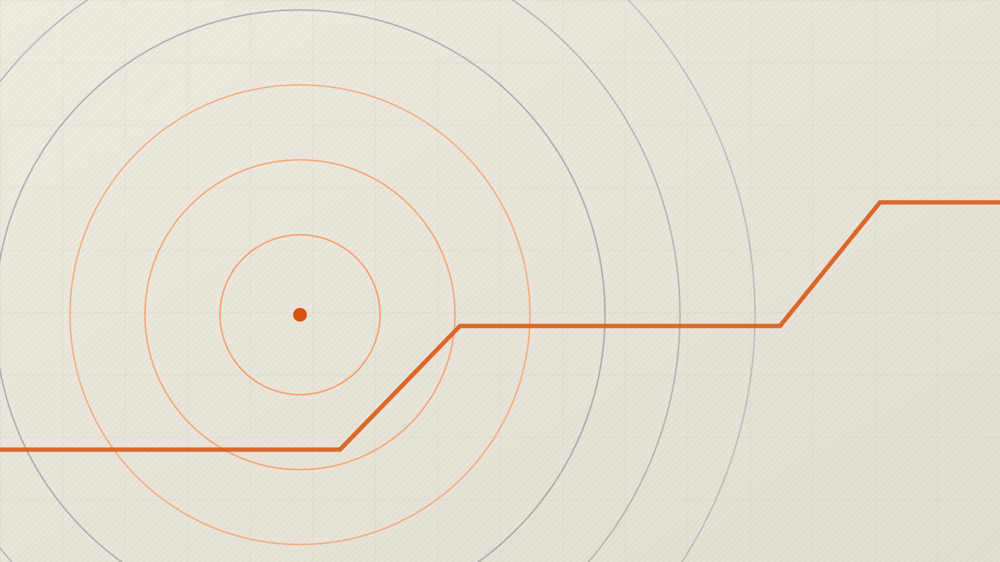
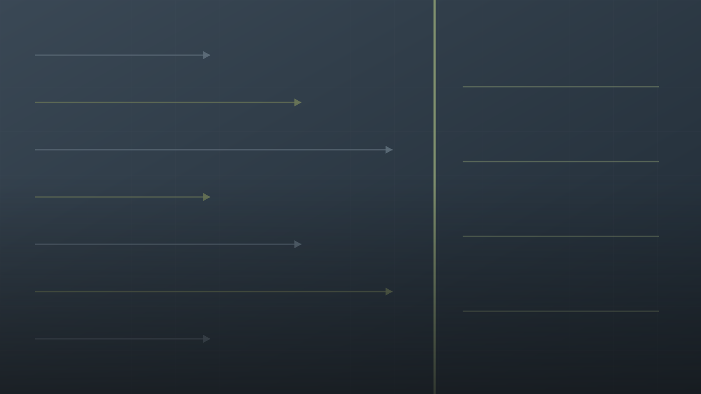

Launch
A clip, a short read, and one event you are standing inside. You are the primary source, so the lesson starts in your hand.
NowThis course starts with a story that is happening today and traces it back, step by step, to the moment it actually began.
One event is open now. The other five are built on the same template and unlock as the semester moves, so you can see what is coming.

Start with the phone you cannot reach during lunch, and end up on a keynote stage in San Francisco in 2007.

AI is doing work that used to require a degree. Trace it back through every earlier machine that did the same to somebody else.
Opens week 4

One current flashpoint, traced back through the wars, the partition, the mandate, and the promises that produced it.
Opens week 7

Why the standoff exists at all. Back through the revolution, the coup, and the oil concession that set the terms.
Opens week 10
A headline about this year's weather, walked back to the first engine that burned coal for profit.
Opens week 13

Today's argument about the border, traced back through the laws, the quotas, and the labor demands that wrote them.
Opens week 16
You learn one method and then run it on story after story. The number of trace-back steps changes with the story, Lesson 1 has five of them, but the four movements never change. By the third lesson you will not need the scaffolding, which is exactly when you take it outside to a story of your own.
A clip, a short read, and one event you are standing inside. You are the primary source, so the lesson starts in your hand.
NowThe spine of the course. One question, asked as many times as the story takes: okay, but what caused that?
Going backwardAttack your own chain. A chain that feels tidy is not the same thing as a chain that is true, and this is where you find out which links hold.
Turning aroundYour argument. A defensible claim, your strongest and weakest links, the smartest opposing view, and one honest concession.
Back to youPick a story nobody assigned you, any beat at all, and run the same method on it for twenty weeks. Portfolio, video, or your own BeHistorical-style mini-site. One rubric under all three, because you are graded on the tracing, not the medium.
Explore Your Beat →Pick your own story and run the same method on it all semester. Portfolio, video, or your own mini-site. One rubric under all three.
Every MondayA song, a book, and whatever sits on the bestseller list. Pop culture traces backward just as richly as politics does.
For instructorsPacing across the 20 weeks, the live response data, and the link to the Reverse History Coach.